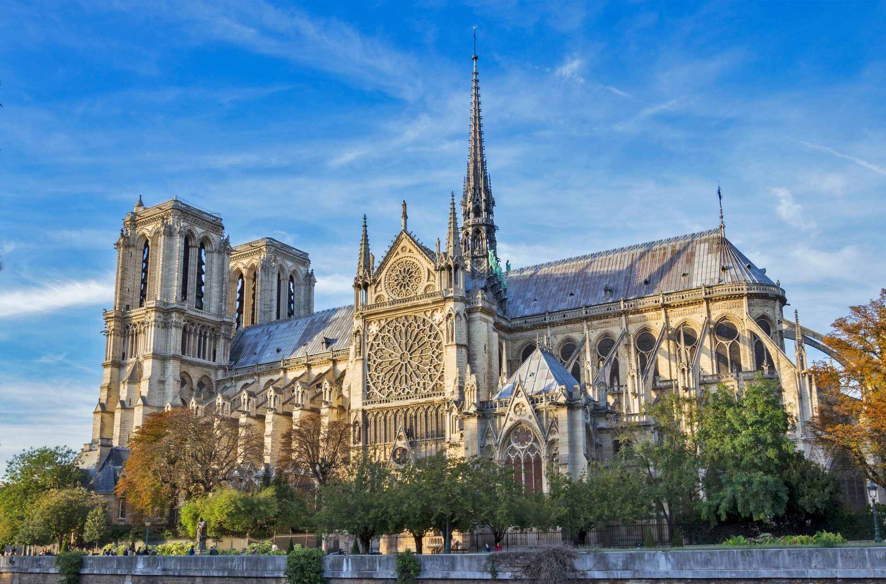
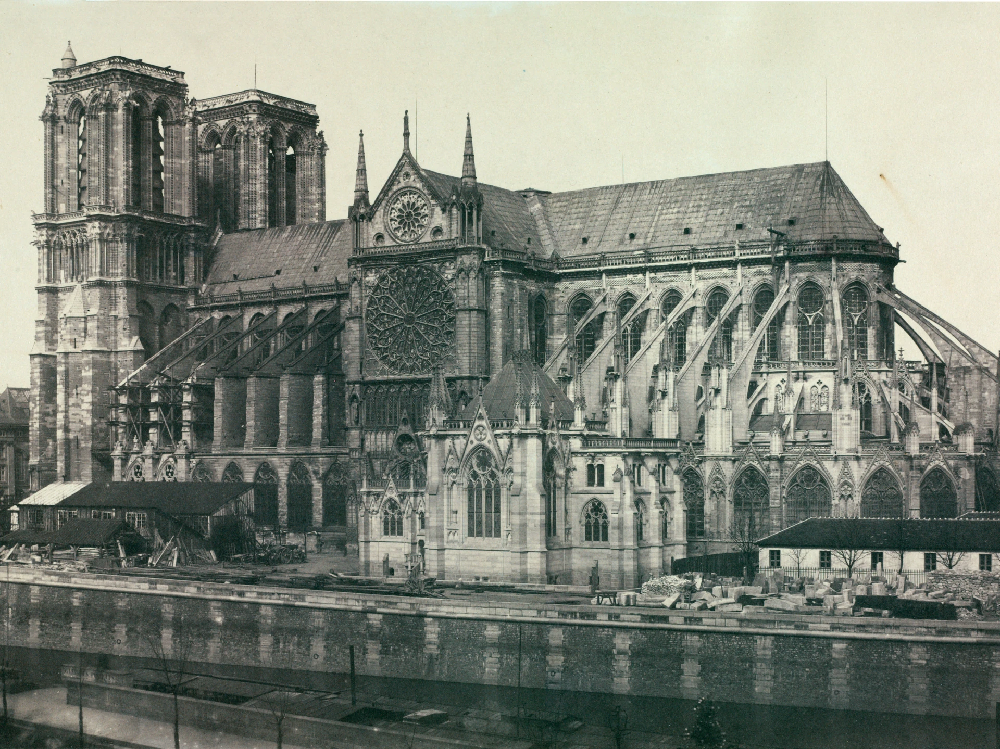
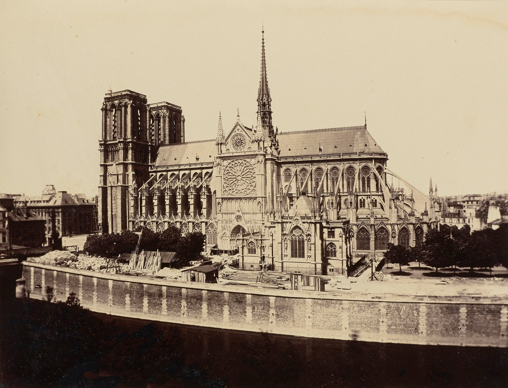
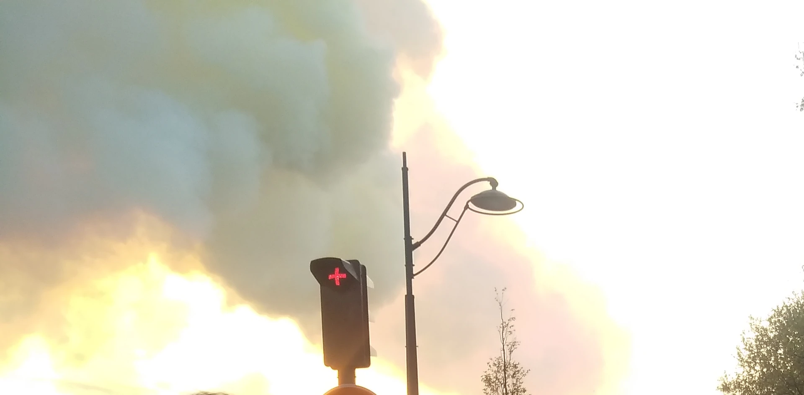
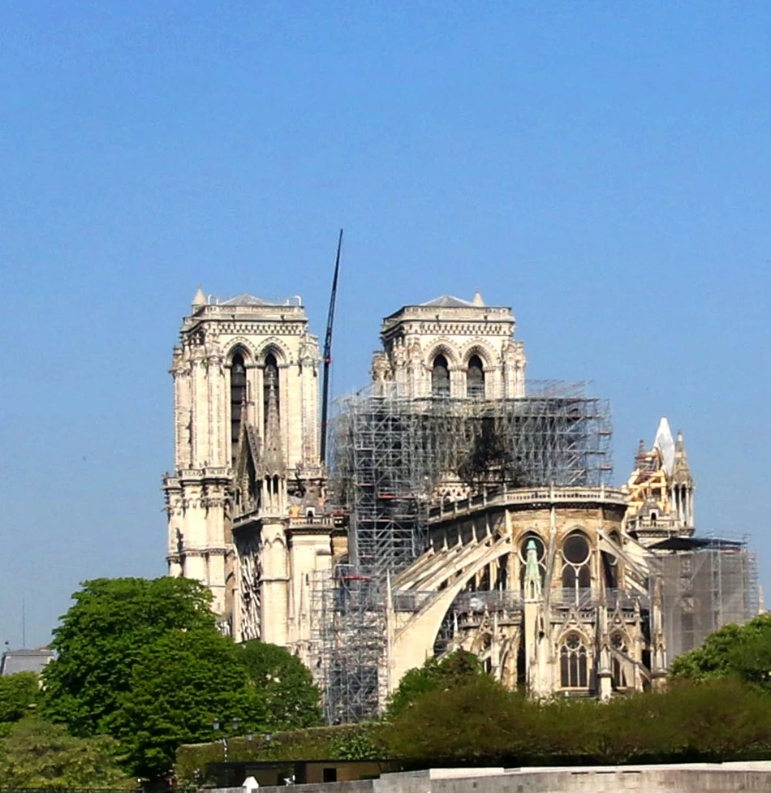
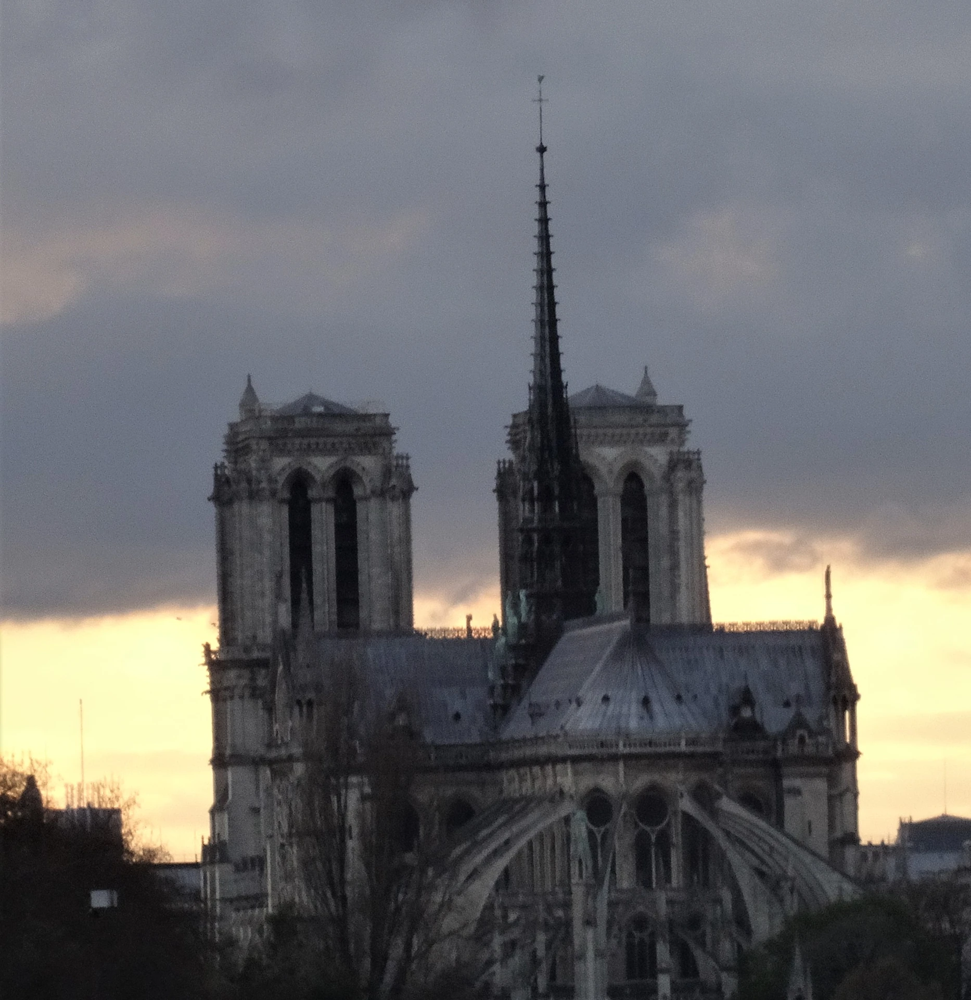
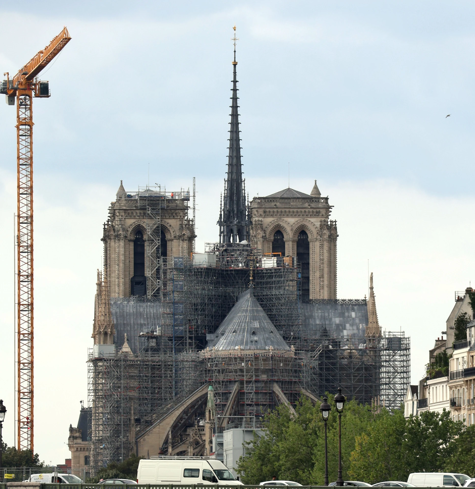
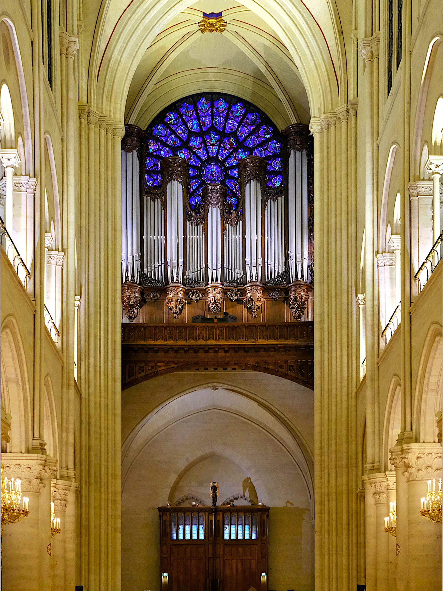

아직 펼치지 않은 카드하늘로 솟은 돌 · 1노트르담 드 파리 대성당불길에 첨탑이 무너지는 모습을 온 세계가 지켜봤던 성당이 있어요. 사람들은 이 성당을 어떻게 다시 세웠을까요?파리의 커다란 성당이야. 큰불이 났었는데 다시 지었대!
1250년 무렵 ~ 2024년파리 시테섬 · 프랑스
노트르담 드 파리 대성당
2019년 4월 15일 저녁, 파리 노트르담 대성당의 첨탑이 불길 속에 무너졌어요. 그런데 이 첨탑은 전에도 한 번 사라졌다가 다시 선 적이 있어요. 사라진 첨탑과 다시 선 첨탑을 손잡이로 밀어 겹쳐 보고, 2024년 12월 7일 닫힌 문이 다시 열린 저녁으로 가 보세요.
파리의 큰 성당 뾰족탑이 불에 무너졌다가 다시 섰어. 손잡이를 밀어서 다시 선 탑을 찾아볼까?
검수 전 시안이에요(기준서 2판 · 초벌). 장면에는 기록에 있는 것만 옮겼고, 기록마다 다른 곳은 ‘기록마다 다른 점’에 적었어요. 상상은 ‘눈 감고 상상해 보기’에만 썼어요.
시안 확인용카드 단계 미리 보기
1
첨탑이 없던 60년
노트르담의 첫 첨탑은 1250년 무렵 지붕 한가운데에 섰어요. 성당 지붕이 십자 모양으로 만나는 곳이에요. 17세기에는 종을 단 종탑이었어요(노트르담 공식 누리집).
비바람에 약해진 첫 첨탑은 1786년부터 1792년 사이에 내려졌어요(공식 누리집). 그 뒤 노트르담은 60년 넘게 첨탑 없이 서 있었어요(파리시).


두 사진은 사진가 에두아르 발뒤스가 남쪽 강 건너편에서 찍었어요. 왼쪽 1852년 무렵 사진에는 지붕 위가 비어 있어요. 오른쪽 1860년대 사진에는 지붕이 십자로 만나는 곳에 새 첨탑이 솟았어요.
건축가 비올레르뒤크가 1857년에 새 첨탑을 그렸고, 1858년부터 1861년 사이에 세웠어요. 높이는 96미터예요(프랑스 문화부). 첨탑 밑동에는 구리로 만든 열두 사도와 네 복음서 저자의 상징, 모두 열여섯 상이 섰어요.
그 가운데 건축가들의 수호성인 토마스만 몸을 돌려 첨탑을 올려다봐요. 토마스의 얼굴은 비올레르뒤크를 본떴어요(파리 대교구). 손에는 건축가의 자를 들었어요(공식 누리집).
옛날 사진에는 뾰족탑이 없어! 나중에 새로 세웠대.
물어보기두 사진에서 다른 곳을 찾아볼까?
2
그날 저녁
2019년 4월 11일, 첨탑의 구리 상 열여섯이 크레인에 실려 땅으로 내려왔어요. 구리 겉판이 벌어지고 속 쇠뼈대가 녹슬어 손질하려는 것이었어요(파리 대교구).
나흘 뒤인 4월 15일 저녁 6시 20분, 미사 도중 불이 났다는 경보가 울렸어요(스미스소니언). 불은 지붕 밑 나무 뼈대에서 번졌어요. 13세기에 짠 이 뼈대는 나무가 빽빽해 ‘숲’이라고 불렸어요(파리시). 저녁 7시 49분, 첨탑이 무너졌어요(스미스소니언).

그사이 소방관과 경찰, 시청 직원들이 200미터쯤 되는 사람 사슬을 만들었어요. 그 손에서 손으로 보물 수십 점이 밖으로 건너갔어요(파리 시장 · AFP).
그리스도인들이 예수가 썼던 가시관이라고 믿어 온 유물과, 13세기 왕 성 루이가 입던 옷도 그렇게 빠져나왔어요(AFP). 소방대의 장 마르크 푸르니에 신부는 성체(미사에서 축성한 빵)를 직접 품고 나왔어요(스미스소니언).
불은 15시간 동안 탔어요. 소방대는 돌로 된 둥근 천장과 북쪽 탑이 무너지지 않게 막아 냈어요(파리시).
큰불이 났어. 소방관 아저씨들이 줄을 서서 보물을 하나씩 밖으로 건넸대.
물어보기줄을 서서 손에서 손으로 건네면 왜 더 빠를까?
3
다시 짠 숲, 다시 선 첨탑
불탄 지붕 뼈대는 13세기 모양 그대로 참나무로 다시 짜기로 했어요(파리시). 목수들은 들보의 네 면을 도끼로 깎았어요. 12~13세기 처음 지을 때와 같은 방법이에요.
함께한 목수 브리외크 드 케랑플레크는 “도끼는 들보에 독특한 모습과 자국을 남긴다”고 말했어요(파리시 인터뷰 · 이 안내서가 옮김). 그의 회사도 이 방법은 처음이라 따로 배워야 했어요.
가운데 손잡이를 밀어 보세요. 세 사진 모두 남동쪽 강가에서 찍었고, 두 탑에 맞춰 겹쳐 놓았어요. 첫째 쌍은 불나기 전과 불탄 뒤, 둘째 쌍은 불탄 뒤와 다시 선 뒤예요.


왼쪽 · 남동쪽에서 본 노트르담, 2018년 4월 · 사진: Jeanne Menjoulet · CC BY 2.0 · 위키미디어 공용
오른쪽 · 불이 꺼지고 나흘 뒤, 2019년 4월 19일 · 사진: Guillaume Baviere · CC BY-SA 2.0 · 위키미디어 공용
불나기 한 해 전과 불이 꺼지고 나흘 뒤예요. 두 탑은 그대로인데, 그 사이에 솟아 있던 첨탑이 사라지고 공사용 발판만 남았어요. 두 사진은 찍은 자리가 조금 달라서 탑 모양이 살짝 어긋나요.

2019년 4월 19일2025년 7월왼쪽 · 불이 꺼지고 나흘 뒤, 2019년 4월 19일 · 사진: Guillaume Baviere · CC BY-SA 2.0 · 위키미디어 공용
오른쪽 · 다시 선 첨탑, 2025년 7월 · 사진: FreCha · CC BY-SA 4.0 · 위키미디어 공용
불이 꺼지고 나흘 뒤와 6년 뒤예요. 비어 있던 자리에 같은 모양의 첨탑이 다시 섰어요. 지붕 둘레는 아직 공사용 발판으로 덮여 있어요.
첨탑도 비올레르뒤크의 그림 그대로 다시 세웠어요. 2023년 4월 15일, 불이 난 지 꼭 4년 되는 날 첨탑 밑동을 놓았어요. 11월 28일에 뼈대를 다 올렸고, 12월 16일 꼭대기에 십자가와 새 수탉이 올라갔어요(프랑스 문화부).
옛 수탉은 불탄 뒤 지붕 위에서 찌그러진 채 발견되었어요. 새 수탉은 날개가 불꽃 모양이에요. 대성당이 잿더미에서 다시 태어날 수 있다는 뜻을 담았어요. 그 안에는 다시 짓는 일을 한 2,000명의 이름도 넣었어요(파리시).
목수들이 옛날처럼 도끼로 나무를 깎았대. 그리고 뾰족탑을 똑같이 다시 세웠어.
물어보기손잡이를 밀어서 뾰족탑이 다시 나타나는 곳을 찾아볼까?
4
문이 다시 열린 저녁
2024년 12월 7일 저녁, 바람이 세차게 불었어요. 닫힌 정문 앞에 파리 대주교 로랑 윌리크가 섰어요. 손에는 불탄 들보를 깎아 만든 지팡이를 들었어요(AP 통신).
대주교가 지팡이로 문을 세 번 두드렸어요(AP 통신). 그때마다 성당 안에서 시편 노래가 대답했어요. ‘주님의 집으로 가자 할 때 나는 기뻤어요’라는 노래예요(시편 122편 1절). 세 번째 노래에 문이 열렸어요(노트르담 공식 누리집).
문이 열리자 대주교는 5년 가까이 잠잠하던 큰 오르간을 축복했어요. 그리고 오르간에게 여덟 번 말을 걸었고, 오르간은 그때마다 대답했어요(공식 누리집). 오르가니스트 네 사람이 그 자리에서 가락을 지어 대답했어요. 파이프 7,952개에서 낮게 울리던 소리가 점점 커져 웅장한 음악이 되었어요(AP 통신).
아래 사진은 다시 연 성당 안에서 서쪽 정문 쪽을 본 모습이에요. 큰 나무 문 위로 그 오르간이 보여요. 대주교가 오르간에게 건넨 첫마디는 이랬어요.

“깨어나라, 오르간아, 거룩한 악기야.”
로랑 윌리크 대주교, 2024년 12월 7일(AP 통신) · 이 안내서가 옮김
주교님이 지팡이로 문을 똑똑똑 세 번 두드렸어. 안에서 노래가 대답했고, 오르간도 우렁차게 대답했대!
물어보기똑, 똑, 똑. 손으로 세 번 두드려 볼까?
눈 감고 상상해 보기
2024년 12월 7일 저녁, 닫힌 문 앞이에요. 차가운 바람이 옷자락을 잡아당겨요. 똑, 똑, 똑. 나무 문 너머에서 노랫소리가 흘러나와요. 문이 열리자 깨끗이 씻은 돌벽이 불빛에 환하고, 머리 위 어디선가 낮은 소리가 차오르기 시작해요.
눈을 감아 봐. 큰 나무 문 앞이야. 똑똑똑! 문 너머에서 노래가 들려.
나의 자리
닫힌 문을 세 번 두드리자 안에서 노래가 대답했어요. 내가 오래 닫아 두었던 문 가운데, 다시 두드려 보고 싶은 문은 무엇인가요?
닫힌 문을 똑똑 두드리면, 안에서 누가 대답해 주면 좋겠어?
마음에 닿는 한 줄을 고르거나 직접 써 보세요. 한 줄을 남기면 이 자리의 도장이 찍혀요. 이 기기에만 저장돼요.
더 깊이
궁금한 칸만 펼쳐 읽어도 괜찮아요.
기록마다 다른 점
첫 첨탑의 종. 노트르담 공식 누리집은 17세기에 종 다섯 개가 달려 있었다고 적어요. 파리시는 작은 종 여섯 개, 높이 83미터라고 적어요.
비올레르뒤크 첨탑의 해와 높이. 프랑스 문화부는 1857년에 그려 1858~1861년에 세웠고 높이가 96미터라고 적어요. 파리시는 1859년 8월 15일에 처음 선보였고 높이가 93미터(수탉까지 96미터)라고 해요. 공식 누리집은 목수 벨뤼가 1860년에 일을 시작했다고 적어요.
옛 수탉을 찾은 곳. 문화부는 곁채 지붕 위, 파리시는 본당 지붕 옆 통로에서 찾았다고 적어요. 두 곳 모두 성당 지붕 위예요.
시편의 번호. 노트르담 공식 누리집은 ‘시편 121편’이라고 적어요. 가톨릭 전례가 쓰는 옛 라틴어 성경의 번호예요. 개역개정 성경에서는 같은 노래가 122편이에요.
함께 읽는 말씀
문 두드림에 대답한 노래는 시편 122편이에요. 예루살렘 성전으로 올라가는 순례자의 노래예요. “사람들이 나에게 주님의 집으로 올라가자고 할 때 나는 기뻤어요. 우리 발이 너의 문 안에 서 있구나.” 그리스도인들은 이 노래를 교회로 모이는 기쁨의 노래로 불러 왔어요. 말씀은 뜻만 옮겼어요. 본문은 시편 122편에서 읽어요.
직접 가 보기
확인한 날 · 2026년 11월 22일 · 바뀌기 쉬운 정보라 정기적으로 다시 확인해요
성당 안 가운데 통로에서 뒤로 돌아서면, 서쪽 장미창 아래 큰 오르간이 보여요. 2024년 12월 7일 대주교의 부름에 대답한 그 오르간이에요.
밖에서는 남동쪽 센강 가에서 첨탑을 올려다보세요. 첨탑 밑동 네 귀퉁이에 구리 상 열여섯이 2025년 여름 모두 제자리로 돌아왔어요. 마지막으로 돌아온 상은 7월 24일의 토마스예요(다시 짓는 일을 맡은 공공 기관). 혼자 첨탑을 올려다보는 상을 찾아보세요.
사라지고 다시 선 첨탑 금박
두 쌍의 사진을 손잡이로 끝까지 겹쳐 보면 카드에 금박이 입혀져요.
두 쌍 모두 손잡이를 양쪽 끝까지 밀어 겹쳐 보기
아이와 함께 채색
아이와 함께 끝까지 보면 카드가 채색돼요.
아이와 함께 ‘영화처럼 보기’를 끝까지 보기
근거 보기 (12)
- 노트르담 드 파리 공식 누리집: 첨탑 — 첫 첨탑 1250년 무렵 · 17세기 종 다섯 · 1786~1792년에 내림 · 비올레르뒤크의 장식 첨탑 · 목수 벨뤼 1860년 · 나무 500톤·납 250톤 · 96미터 · 토마스는 비올레르뒤크의 얼굴로 하늘을 보며 오른손에 자를 듦 · 수탉 속 유물 셋 · 불나기 전 상들을 손질하려고 내림
- 노트르담 드 파리 공식 누리집: 다시 여는 예식(2024년 12월 7~8일) — 대주교가 지팡이로 닫힌 문을 침 · 성당이 시편 121편을 세 번 노래로 대답 · 세 번째에 문이 열림 · ‘큰 오르간의 깨어남’: 악기를 축복하고 여덟 번 말을 걸며 오르간이 그때마다 대답
- 노트르담 드 파리 공식 누리집: 예식 다시 보기 — 지팡이로 정문을 여러 번 침 · 5년 만에 처음 성가대 노래 · 오르간과의 대화 · 12월 8일 제단 축성
- AP 통신(ABC 뉴스 실음, 2024년 12월 7일) — 세 번 두드림 · 불탄 들보로 깎은 지팡이 · 대주교의 말 “Wake up, organ, sacred instrument” · 여덟 번의 부름 · 오르가니스트 네 사람 · 파이프 7,952개 · 5년 가까이 잠잠 · 세찬 바람 · 큰 종 에마뉘엘
- 프랑스 문화부: 첨탑을 되찾은 날 — 1857년 설계, 1858~1861년 세움 · 96미터 · 2023년 4월 15일 밑동 · 11월 28일 뼈대 마침 · 12월 16일 십자가와 수탉 · 옛 수탉은 찌그러진 채 발견 · 새 수탉은 불새를 떠올리는 날개(필리프 빌뇌브)
- 파리시: 첨탑의 역사 — 첫 첨탑은 종탑 · 비바람에 약해져 18세기 말에 내림 · 1797년부터 그림에 없음 · 60년 넘게 첨탑 없음 · 1859년 8월 15일 · 93미터 · 구리 상 열여섯 · 옛 수탉 30kg · 새 수탉 속 2,000명의 이름 · 2019년 4월 15일 저녁 8시 조금 전 무너짐
- 파리시: 노트르담의 부활 — 불이 15시간 탐 · 13세기에 짠 ‘숲’ 지붕 뼈대 · 소방대가 둥근 천장과 북쪽 탑을 지킴 · 지붕 뼈대를 13세기 것과 똑같이 손으로 다시 짬 · 2024년 12월 7~8일 다시 엶
- 파리시: 목수 브리외크 드 케랑플레크 인터뷰 — 들보를 12~13세기처럼 도끼로 깎음 · 도끼가 남기는 모습과 자국 · 회사도 처음이라 따로 배움 · 2023년 8월 들어 올림 · 2024년 1월 12일 마침
- 파리 대교구: 2019년 4월 11일 첨탑의 상 열여섯을 내림 — 구리 겉판의 이음이 벌어지고 속 쇠뼈대가 녹슮 · 비올레르뒤크가 그리고 조프루아 데숌이 빚음 · 토마스는 비올레르뒤크의 얼굴로 자기 작품 쪽으로 몸을 돌림
- 다시 짓는 일을 맡은 공공 기관(Rebâtir Notre-Dame de Paris): 첨탑의 상 — 2019년 4월 11일 내려 살아남음 · 2025년 7월 24일 토마스가 마지막으로 돌아옴 · 첨탑을 바라보는 유일한 상
- 스미스소니언 매거진(2019년 4월) — 저녁 6시 20분 경보 · 7시 49분 첨탑 무너짐 · 사람 사슬 · 푸르니에 신부가 성체를 직접 구함
- AFP(방콕 포스트 실음, 2019년 4월) — 소방관·경찰·시청 직원의 사람 사슬 약 200미터 · 보물 수십 점 · 가시관과 성 루이의 옷
그림·사진·소리 출처
- 사진: 에두아르 발뒤스 · 퍼블릭 도메인 · 위키미디어 공용(클리블랜드 미술관)
- 사진: 에두아르 발뒤스 · 퍼블릭 도메인 · 위키미디어 공용(게티 미술관)
- 사진: 에두아르 발뒤스 · 퍼블릭 도메인 · 위키미디어 공용(메트로폴리탄 미술관)
- 사진: Rémi Mathis · CC BY-SA 4.0 · 위키미디어 공용
- 사진: Jeanne Menjoulet · CC BY 2.0 · 위키미디어 공용
- 사진: Guillaume Baviere · CC BY-SA 2.0 · 위키미디어 공용
- 사진: Guillaume Baviere · CC BY-SA 2.0 · 위키미디어 공용
- 사진: FreCha · CC BY-SA 4.0 · 위키미디어 공용
- 사진: Mbzt · CC BY 4.0 · 위키미디어 공용
- 사진: Ali Sabbagh · CC0 · 위키미디어 공용
‘처음 만나는 기독교 문화’의 깊은 카드예요. 카드 단계와 남긴 글은 이 기기에만 저장돼요.